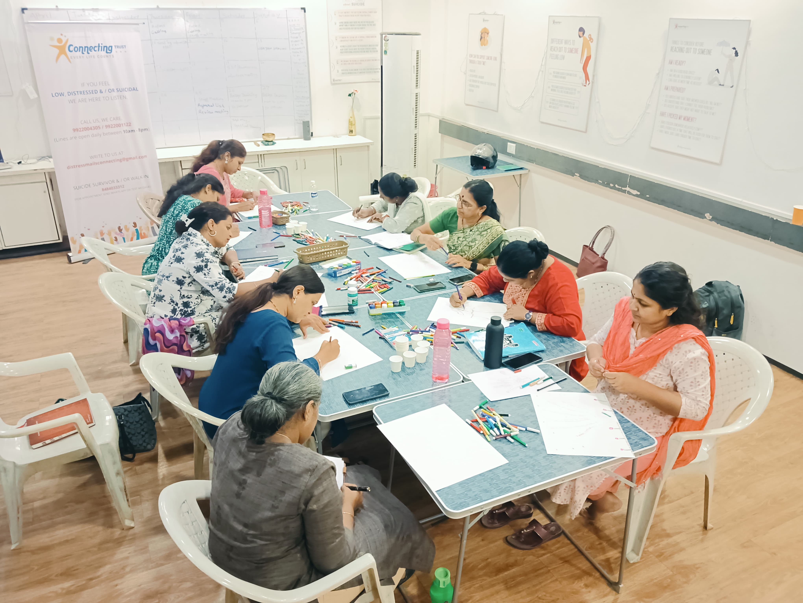
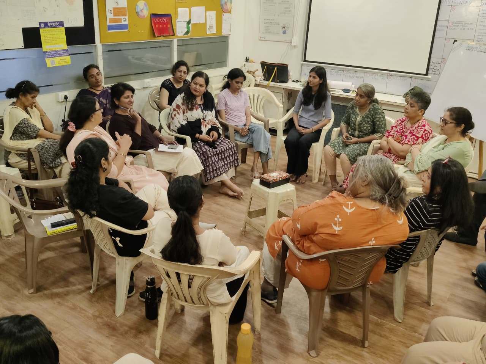
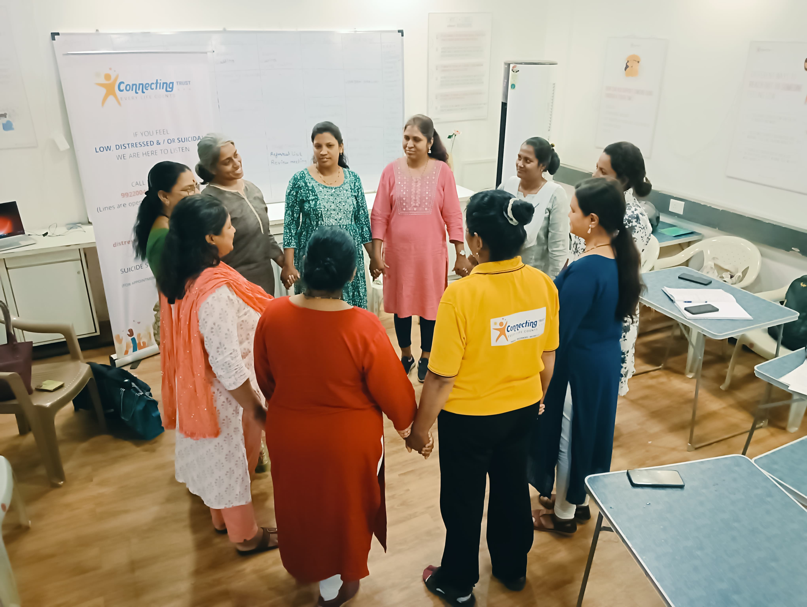

Choose the gathering that speaks to you
A gathering on loneliness is for people experiencing loneliness. A gathering on heartbreak, overwhelm or another experience will be held separately.
Attune Gatherings
Each gathering brings together people living through a similar experience—so you can speak freely, hear one another’s stories and feel less alone in your own.


One shared experience at a time
Depending on the topic, people may express themselves through conversation, writing, art, a shared activity or quiet participation.
A gathering on loneliness is for people experiencing loneliness. A gathering on heartbreak, overwhelm or another experience will be held separately.
Different lives can hold a similar feeling. Hearing how others are living through it can bring recognition, perspective and hope.
You can say things you may not have been able to say elsewhere, without being hurried, judged or fixed.
Possible gathering themes
Each of these would be a separate gathering, announced with its own date and joining details.

Sometimes being asked how you are feeling—and having time to answer—is meaningful in itself.
How a gathering runs
The facilitator introduces the topic, the purpose and how everyone will treat one another.
A simple opening round gives each person a first chance to arrive and be heard.
Questions and structured rounds create space for personal stories, listening and reflection.
A final round helps everyone notice what they are leaving with before the gathering closes.
The agreements
The facilitator explains these agreements at the beginning and helps the group return to them when needed.
Stay curious rather than preparing a reply.
No one has to represent or explain an entire group.
Personal stories are not carried outside as somebody else’s story to tell.
Make room for others and remember that passing is allowed.
Attune Gatherings are facilitated reflective experiences. They are not therapy, crisis support, debate or group advice sessions.
Upcoming gatherings
Each gathering will be announced with its topic, date, format and who it is intended for. You can also tell us about a topic or shared experience you would like us to hold space for.